Artist Book / Hand-bound Book Object
Skin of Writing
A hand-bound artist book built from ink, calligraphy practice paper, discarded fragments, and translucent layers.

Project
Skin of Writing
This book gathers the surfaces, corrections, pressures, and repetitions of writing practice into a hand-bound object. The page is treated as a skin: a place where gesture leaves evidence before language becomes fixed.
01
Book Object
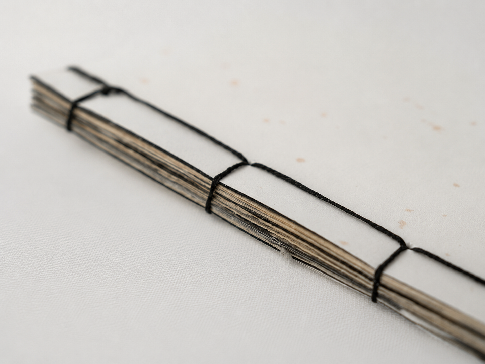
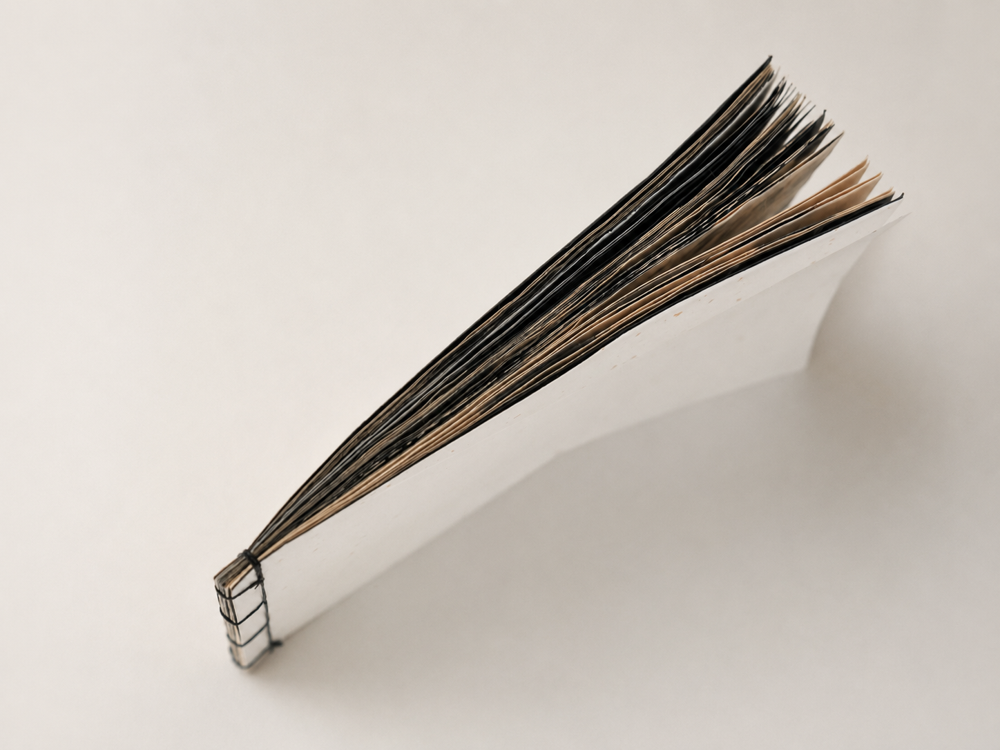
02
Interior Sequence
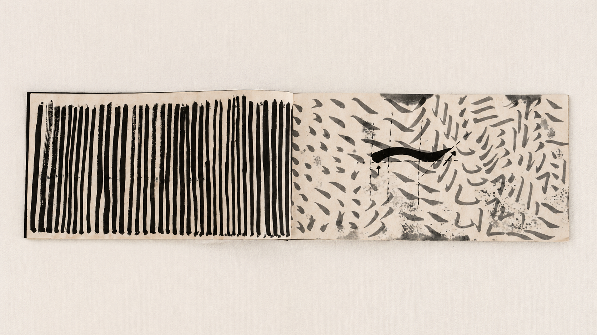
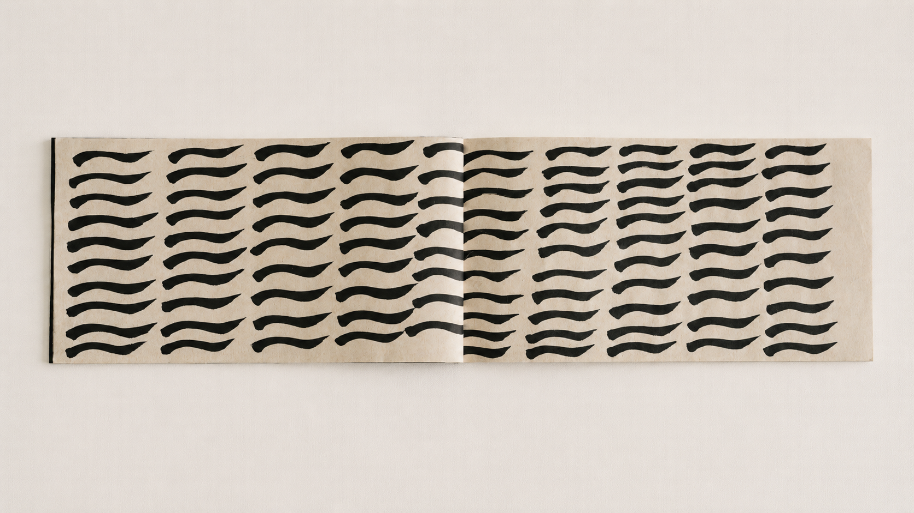
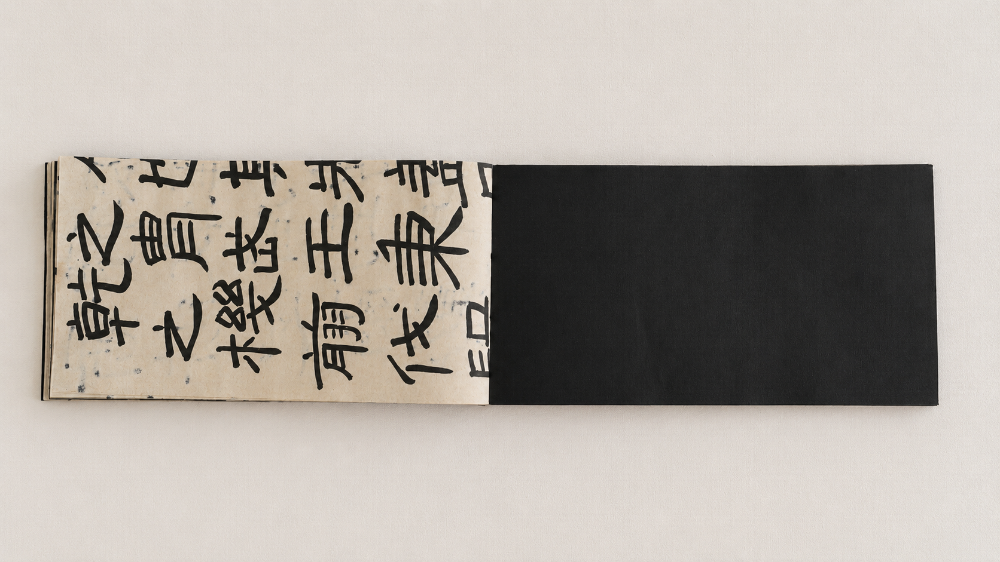
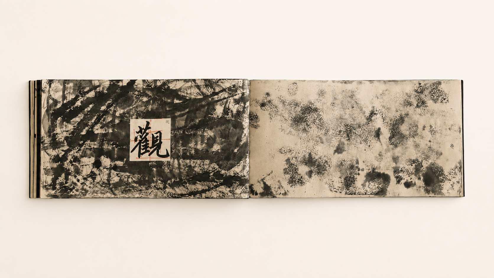
03
Detail
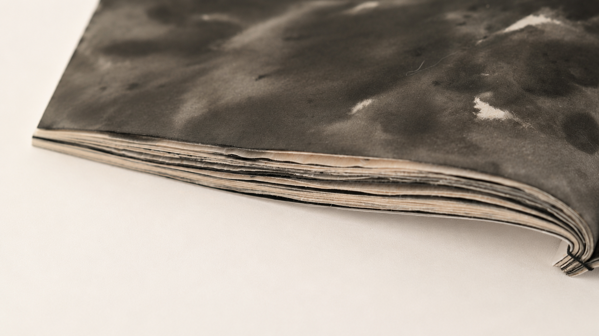
Reading protocol / 01
Reading traces
Select a trace to alter the reading emphasis in the interior sequence. This is an artist-defined protocol, not automated recognition.
PROCESS
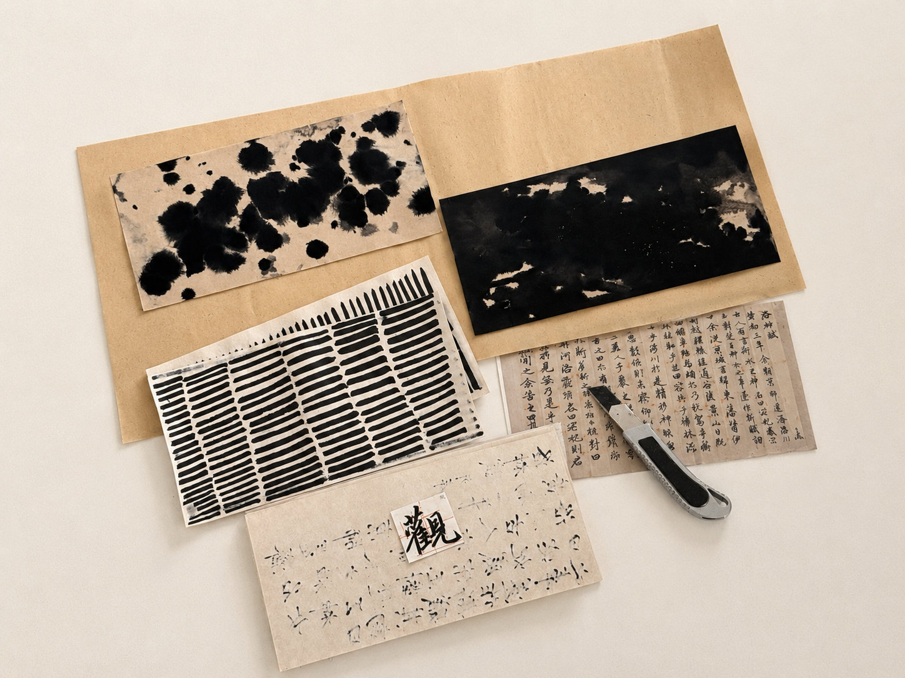
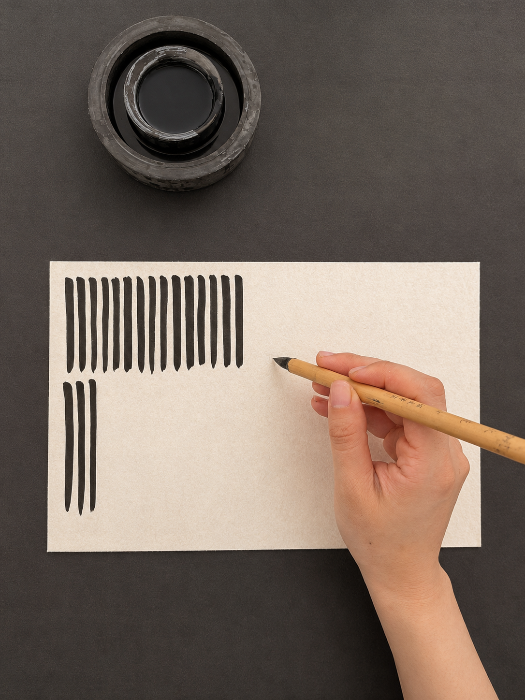
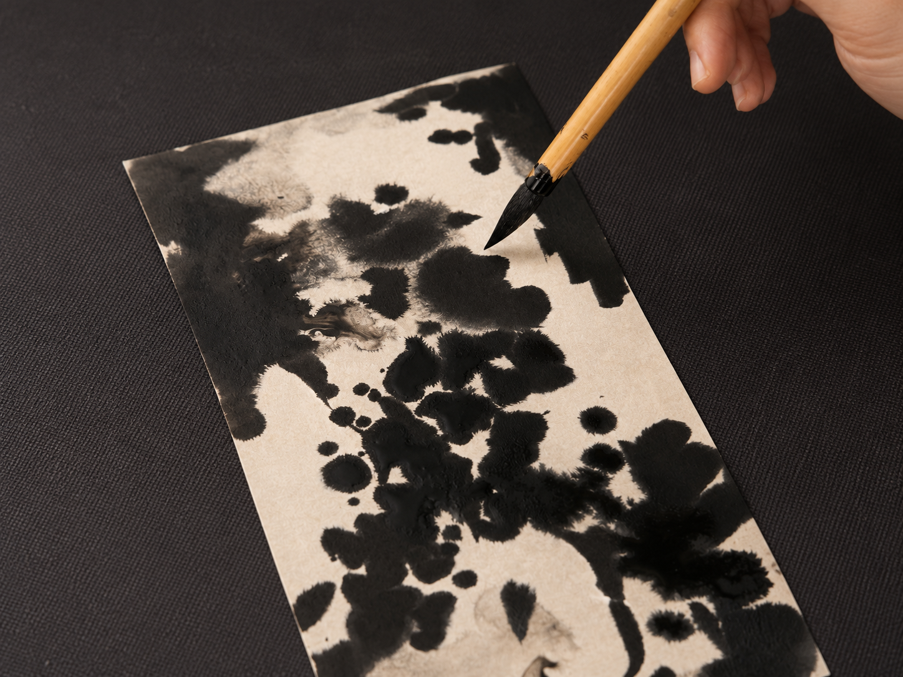
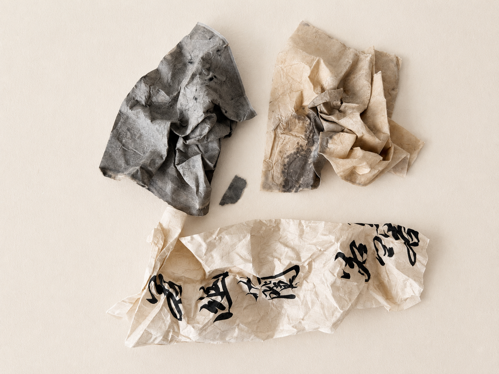
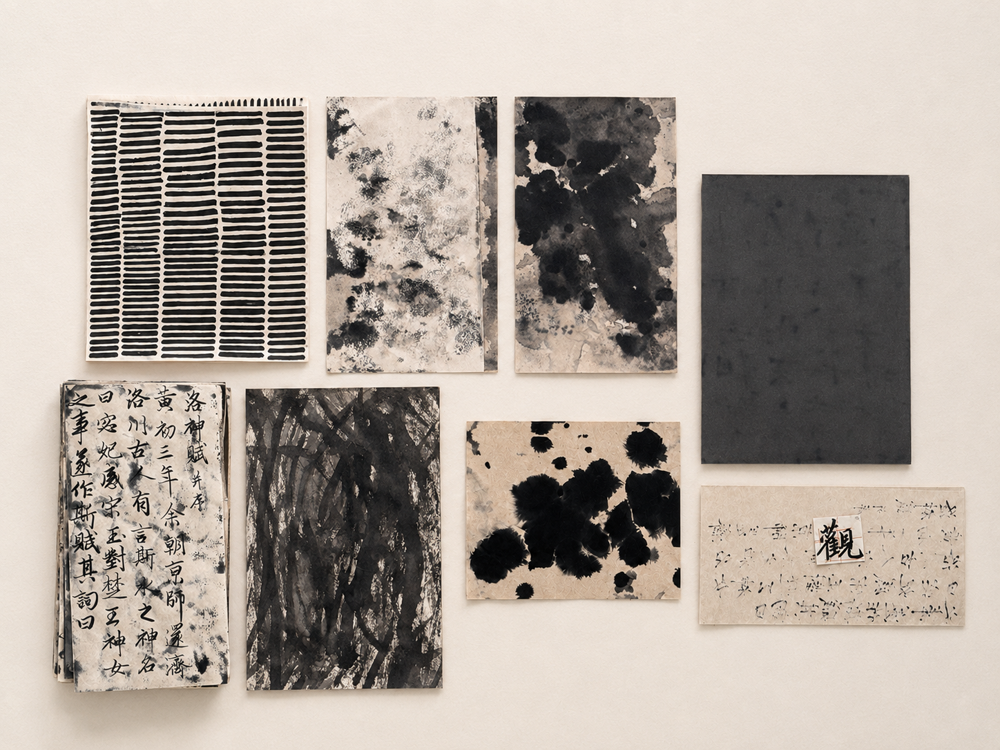